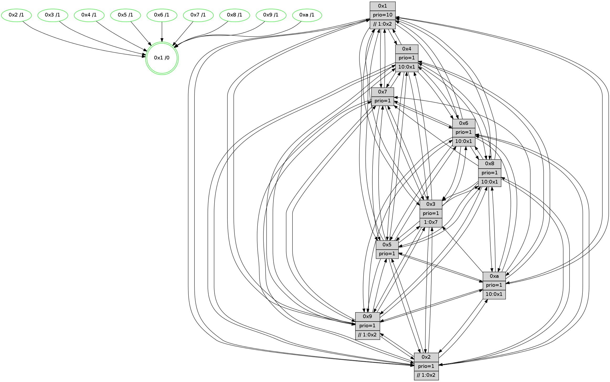

>> << IDX [start] -100 -25 -5 +0 +5 +25 +100 [865.008276939]
 Previous packets
----------------------------------------------------------------------
860.279492 beacon01(faad) #0 coord=01,02,03,04,05,06,07,0a,09,08 cycle=688.0ms assoc
-- color-indic=1 64 b5 5c
860.289476 beacon02(faad) #0 coord=01,02,03,04,05,06,07,0a,09,08 cycle=688.0ms assoc 64 26 6d
860.299475 beacon03(faad) #0 coord=01,02,03,04,05,06,07,0a,09,08 cycle=688.0ms assoc 64 5c 20
860.309475 beacon04(faad) #0 coord=01,02,03,04,05,06,07,0a,09,08 cycle=688.0ms assoc 64 2b ca
860.319475 beacon05(faad) #0 coord=01,02,03,04,05,06,07,0a,09,08 cycle=688.0ms assoc 64 51 87
860.329475 beacon06(faad) #0 coord=01,02,03,04,05,06,07,0a,09,08 cycle=688.0ms assoc 64 df 50
860.339476 beacon07(faad) #0 coord=01,02,03,04,05,06,07,0a,09,08 cycle=688.0ms assoc 64 a5 1d
860.349480 beacon0a(faad) #0 coord=01,02,03,04,05,06,07,0a,09,08 cycle=688.0ms assoc 64 d4 16
860.369480 beacon08(faad) #0 coord=01,02,03,04,05,06,07,0a,09,08 cycle=688.0ms assoc 64 20 8c
860.381656 [Hello(4): seq=550 sym=5,7,6,2,3,9,8,10,1 sysInfo= stat=5:15,5,4,9/7:12,1,5,5/6:1,12,3,8/2:14,3,15,8/3:15,6,1,6/9:7,2,7,4/8:5,12,5,10/10:14,10,9,7/1:1,14,1,1]
860.385343 [Hello(10): seq=483 sym=6,2,3,8,9,5,7,4,1 sysInfo=hasWarning stat=6:15,13,4,3/2:7,3,0,2/3:14,15,15,7/8:0,1,0,0/9:13,6,4,1/5:6,6,6,11/7:2,5,4,5/4:15,9,11,6/1:3,2,3,1]
860.388499 [Color(10) seq=171 @0:0 prio=1 >10.@1,1.@2,1.@3,1.@5]
860.392636 [STC(1) #0.103 tree-change,inconsistent-stability,stable,to-color d=0]
860.394886 [Color(6) seq=193 @0:0 prio=1 >10.@1,1.@2,1.@3,1.@5]
860.397185 [Hello(9): seq=494 sym=2,5,3,4,7,6,8,10,1 sysInfo=hasWarning stat=2:1,10,2,0/5:2,8,0,2/3:0,6,0,10/4:7,8,0,6/7:0,7,8,8/6:0,9,6,6/8:14,6,9,1/10:8,13,7,0/1:14,13,2,1]
860.400312 [Color(9) seq=199 @0:0 prio=1 >>1.@2,1.@3,1.@5]
860.403016 [Hello(8): seq=494 sym=5,2,3,4,7,6,9,10,1 sysInfo=hasWarning stat=5:4,8,7,10/2:1,1,1,2/3:2,13,4,10/4:7,5,1,6/7:5,1,7,10/6:4,14,1,8/9:0,1,0,0/10:11,1,6,0/1:6,5,15,0]
860.405905 [Hello(7): seq=550 sym=2,3,5,6,4,9,10,1 sysInfo=hasWarning stat=2:11,1,13,10/3:10,9,8,10/5:2,3,10,14/6:8,6,8,4/4:4,9,4,0/9:6,5,7,10/10:1,4,11,9/1:15,7,0,0]
860.409942 [Color(8) seq=206 @0:0 prio=1 >10.@1,1.@2,1.@3,1.@5]
860.412564 [Color(7) seq=156 @0:0 prio=1]
860.413850 [Color(1) seq=231 @0:0 prio=10 >>1.@2,1.@3,1.@5]
860.416330 [Color(3) seq=191 @0:0 prio=1 >1.@7]
----------------------------------------------------------------------
861.067625 beacon01(faad) #0 coord=01,02,03,04,05,06,07,0a,09,08 cycle=688.0ms assoc
-- color-indic=1 64 71 52
861.077607 beacon02(faad) #0 coord=01,02,03,04,05,06,07,0a,09,08 cycle=688.0ms assoc 64 e2 63
861.087607 beacon03(faad) #0 coord=01,02,03,04,05,06,07,0a,09,08 cycle=688.0ms assoc 64 98 2e
861.097608 beacon04(faad) #0 coord=01,02,03,04,05,06,07,0a,09,08 cycle=688.0ms assoc 64 ef c4
861.107607 beacon05(faad) #0 coord=01,02,03,04,05,06,07,0a,09,08 cycle=688.0ms assoc 64 95 89
861.117608 beacon06(faad) #0 coord=01,02,03,04,05,06,07,0a,09,08 cycle=688.0ms assoc 64 1b 5e
861.127609 beacon07(faad) #0 coord=01,02,03,04,05,06,07,0a,09,08 cycle=688.0ms assoc 64 61 13
861.137612 beacon0a(faad) #0 coord=01,02,03,04,05,06,07,0a,09,08 cycle=688.0ms assoc 64 10 18
861.157614 beacon08(faad) #0 coord=01,02,03,04,05,06,07,0a,09,08 cycle=688.0ms assoc 64 e4 82
861.168826 [Hello(6): seq=551 sym=2,3,5,4,7,9,8,10,1 sysInfo= stat=2:14,4,14,7/3:10,10,7,8/5:8,0,7,11/4:15,2,15,0/7:3,0,2,4/9:8,1,6,1/8:1,2,0,0/10:6,3,11,8/1:2,8,14,1]
861.171870 [Hello(1): seq=460 sym=4,2,9,5,3,8,6,7 sysInfo=coloring-mode-on,ColoringModeRequestCalled stat=4:13,9,5,0/2:5,1,0,9/9:0,4,1,2/5:2,0,9,3/3:13,7,15,1/8:0,1,0,0/6:13,12,14,8/7:10,10,4,11]
861.174473 [STC(10)->1 #0.103 tree-change,inconsistent-stability,stable,to-color d=1]
861.175869 [Hello(5): seq=551 sym=7,6,4,3,1,9,8,10 asym= sysInfo=hasWarning stat=7:3,13,7,7/6:4,9,5,8/4:15,3,8,5/3:9,14,13,8/1:10,14,1,1/9:10,10,5,1/8:13,6,0,7/10:14,13,13,2]
861.179714 [Hello(2): seq=547 sym=4,5,7,6,3,9,8,10,1 sysInfo=hasWarning stat=4:7,0,14,4/5:3,5,1,0/7:4,12,7,8/6:1,12,2,6/3:9,5,0,4/9:12,8,2,1/8:13,9,14,7/10:10,0,0,7/1:8,11,15,1]
861.182652 [Hello(3): seq=551 sym=1,7,6,2,4,9,10,5 sysInfo= stat=1:14,8,6,0/7:9,13,14,6/6:7,8,3,0/2:1,12,1,8/4:3,5,8,5/9:11,0,3,8/10:2,4,1,7/5:9,12,13,9]
861.187466 [STC(2)->1 #0.103 tree-change,inconsistent-stability,stable,to-color d=1]
861.189105 [Color(2) seq=196 @0:0 prio=1 >>1.@2,1.@3,1.@5]
861.191958 [STC(4)->1 #0.103 tree-change,inconsistent-stability,stable,to-color d=1]
861.194886 [Color(4) seq=169 @0:0 prio=1 >10.@1,1.@2,1.@3,1.@7]
861.198599 [STC(5)->1 #0.103 tree-change,inconsistent-stability,stable,to-color d=1]
861.200559 [Color(5) seq=204 @0:0 prio=1]
----------------------------------------------------------------------
861.855755 beacon01(faad) #0 coord=01,02,03,04,05,06,07,0a,09,08 cycle=688.0ms assoc
-- color-indic=1 64 cd 57
861.865738 beacon02(faad) #0 coord=01,02,03,04,05,06,07,0a,09,08 cycle=688.0ms assoc 64 5e 66
861.875737 beacon03(faad) #0 coord=01,02,03,04,05,06,07,0a,09,08 cycle=688.0ms assoc 64 24 2b
861.885739 beacon04(faad) #0 coord=01,02,03,04,05,06,07,0a,09,08 cycle=688.0ms assoc 64 53 c1
861.895739 beacon05(faad) #0 coord=01,02,03,04,05,06,07,0a,09,08 cycle=688.0ms assoc 64 29 8c
861.905738 beacon06(faad) #0 coord=01,02,03,04,05,06,07,0a,09,08 cycle=688.0ms assoc 64 a7 5b
861.915739 beacon07(faad) #0 coord=01,02,03,04,05,06,07,0a,09,08 cycle=688.0ms assoc 64 dd 16
861.925743 beacon0a(faad) #0 coord=01,02,03,04,05,06,07,0a,09,08 cycle=688.0ms assoc 64 ac 1d
861.945742 beacon08(faad) #0 coord=01,02,03,04,05,06,07,0a,09,08 cycle=688.0ms assoc 64 58 87
861.957592 [Hello(4): seq=551 sym=5,7,6,2,3,9,8,10,1 sysInfo= stat=5:15,6,5,9/7:13,2,5,5/6:2,13,3,8/2:14,3,15,8/3:15,7,1,6/9:8,3,7,4/8:6,13,5,10/10:15,11,9,7/1:2,15,2,1]
861.960955 [Color(6) seq=194 @0:0 prio=1 >10.@1,1.@2,1.@3,1.@5]
861.962716 [Hello(8): seq=495 sym=5,2,3,4,7,6,9,10,1 sysInfo=hasWarning stat=5:5,9,8,10/2:2,2,2,2/3:3,14,4,10/4:8,6,2,6/7:5,2,7,10/6:5,14,1,8/9:0,1,0,0/10:11,1,7,0/1:7,6,15,0]
861.965244 [Color(1) seq=232 @0:0 prio=10 >>1.@2,1.@3,1.@5]
861.967455 [Color(8) seq=207 @0:0 prio=1 >10.@1,1.@2,1.@3,1.@5]
861.969565 [Hello(10): seq=484 sym=6,2,3,8,9,5,7,4,1 sysInfo=hasWarning stat=6:15,14,4,3/2:8,4,1,2/3:15,0,15,7/8:1,2,0,0/9:14,7,4,1/5:7,7,7,11/7:3,6,4,5/4:0,10,12,6/1:3,3,4,1]
861.973060 [Color(3) seq=192 @0:0 prio=1 >1.@7]
861.975644 [Hello(7): seq=551 sym=2,3,5,6,4,1 sysInfo=hasWarning stat=2:12,2,14,10/3:11,10,8,10/5:3,4,11,14/6:9,6,8,4/4:5,10,5,0/1:0,8,0,0]
861.978282 [Color(10) seq=172 @0:0 prio=1 >10.@1,1.@2,1.@3,1.@5]
861.980778 [Color(7) seq=157 @0:0 prio=1]
861.982870 [Hello(9): seq=495 sym=2,5,3,4,7,6,8,10,1 sysInfo=hasWarning stat=2:2,11,3,0/5:3,9,1,2/3:1,7,0,10/4:8,9,1,6/7:1,8,8,8/6:1,9,6,6/8:15,7,9,1/10:8,13,8,0/1:15,14,2,1]
861.985684 [Color(9) seq=200 @0:0 prio=1 >>1.@2,1.@3,1.@5]
----------------------------------------------------------------------
862.643885 beacon01(faad) #0 coord=01,02,03,04,05,06,07,0a,09,08 cycle=688.0ms assoc
-- color-indic=1 64 19 62
862.653869 beacon02(faad) #0 coord=01,02,03,04,05,06,07,0a,09,08 cycle=688.0ms assoc 64 8a 53
862.663868 beacon03(faad) #0 coord=01,02,03,04,05,06,07,0a,09,08 cycle=688.0ms assoc 64 f0 1e
862.673867 beacon04(faad) #0 coord=01,02,03,04,05,06,07,0a,09,08 cycle=688.0ms assoc 64 87 f4
862.683869 beacon05(faad) #0 coord=01,02,03,04,05,06,07,0a,09,08 cycle=688.0ms assoc 64 fd b9
862.693869 beacon06(faad) #0 coord=01,02,03,04,05,06,07,0a,09,08 cycle=688.0ms assoc 64 73 6e
862.703869 beacon07(faad) #0 coord=01,02,03,04,05,06,07,0a,09,08 cycle=688.0ms assoc 64 09 23
862.713875 beacon0a(faad) #0 coord=01,02,03,04,05,06,07,0a,09,08 cycle=688.0ms assoc 64 78 28
862.733874 beacon08(faad) #0 coord=01,02,03,04,05,06,07,0a,09,08 cycle=688.0ms assoc 64 8c b2
862.745413 [Hello(6): seq=552 sym=2,3,5,4,7,9,8,10,1 sysInfo= stat=2:15,5,15,7/3:11,11,7,8/5:9,1,8,11/4:0,3,0,0/7:4,1,2,4/9:9,2,6,1/8:2,3,0,0/10:7,4,12,8/1:3,9,14,1]
862.748464 [Hello(1): seq=461 sym=4,2,9,5,10,3,8,6,7 sysInfo=coloring-mode-on,ColoringModeRequestCalled stat=4:14,10,6,0/2:6,2,1,9/9:1,5,1,2/5:3,1,10,3/10:0,1,0,0/3:14,8,15,1/8:0,2,0,0/6:13,12,14,8/7:11,11,4,11]
862.750874 [Color(4) seq=170 @0:0 prio=1 >10.@1,1.@2,1.@3,1.@7]
862.752790 [Hello(5): seq=552 sym=7,6,4,3,1,9,8,10 sysInfo=hasWarning stat=7:4,14,7,7/6:5,10,5,8/4:0,3,8,5/3:9,15,13,8/1:11,15,1,1/9:11,11,5,1/8:14,7,0,7/10:15,14,13,2]
862.755469 [Color(5) seq=205 @0:0 prio=1]
862.758474 [Hello(3): seq=552 sym=1,7,6,2,4,9,10,5 sysInfo= stat=1:14,8,6,0/7:10,14,14,6/6:7,8,3,0/2:1,13,2,8/4:4,6,9,5/9:12,1,3,8/10:2,5,1,7/5:9,13,14,9]
862.761380 [Hello(2): seq=548 sym=4,5,7,6,3,9,8,10,1 sysInfo=hasWarning stat=4:8,1,15,4/5:3,6,2,0/7:5,13,7,8/6:2,13,2,6/3:9,6,0,4/9:13,9,2,1/8:14,10,14,7/10:11,1,0,7/1:9,12,15,1]
862.766115 [Color(2) seq=197 @0:0 prio=1 >>1.@2,1.@3,1.@5]
----------------------------------------------------------------------
863.432016 beacon01(faad) #0 coord=01,02,03,04,05,06,07,0a,09,08 cycle=688.0ms assoc
-- color-indic=1 64 a5 67
863.441999 beacon02(faad) #0 coord=01,02,03,04,05,06,07,0a,09,08 cycle=688.0ms assoc 64 36 56
863.452001 beacon03(faad) #0 coord=01,02,03,04,05,06,07,0a,09,08 cycle=688.0ms assoc 64 4c 1b
863.461998 beacon04(faad) #0 coord=01,02,03,04,05,06,07,0a,09,08 cycle=688.0ms assoc 64 3b f1
863.471998 beacon05(faad) #0 coord=01,02,03,04,05,06,07,0a,09,08 cycle=688.0ms assoc 64 41 bc
863.481998 beacon06(faad) #0 coord=01,02,03,04,05,06,07,0a,09,08 cycle=688.0ms assoc 64 cf 6b
863.491999 beacon07(faad) #0 coord=01,02,03,04,05,06,07,0a,09,08 cycle=688.0ms assoc 64 b5 26
863.502003 beacon0a(faad) #0 coord=01,02,03,04,05,06,07,0a,09,08 cycle=688.0ms assoc 64 c4 2d
863.512005 beacon09(faad) #0 coord=01,02,03,04,05,06,07,0a,09,08 cycle=688.0ms assoc 64 4a fa
863.522004 beacon08(faad) #0 coord=01,02,03,04,05,06,07,0a,09,08 cycle=688.0ms assoc 64 30 b7
863.535142 [Hello(4): seq=552 sym=5,7,6,2,3,9,8,10,1 sysInfo= stat=5:0,7,5,9/7:14,3,5,5/6:3,14,3,8/2:15,4,15,8/3:0,8,1,6/9:9,4,7,4/8:7,14,5,10/10:0,12,9,7/1:2,0,2,1]
863.538183 [Hello(9): seq=496 sym=2,5,3,4,7,6,8,10,1 sysInfo=hasWarning stat=2:3,12,3,0/5:4,10,1,2/3:2,7,0,10/4:9,9,1,6/7:1,8,8,8/6:2,9,6,6/8:15,7,9,1/10:8,13,8,0/1:0,14,2,1]
863.540871 [Hello(10): seq=485 sym=6,2,3,8,9,5,7,4,1 sysInfo=hasWarning stat=6:0,14,4,3/2:9,5,1,2/3:0,0,15,7/8:1,2,0,0/9:15,8,4,1/5:8,8,7,11/7:3,7,4,5/4:1,10,12,6/1:4,3,4,1]
863.543682 [Color(10) seq=173 @0:0 prio=1 >10.@1,1.@2,1.@3,1.@5]
863.546906 [Hello(7): seq=552 sym=2,3,5,6,4,9,1 sysInfo=hasWarning stat=2:13,3,14,10/3:12,10,8,10/5:4,5,11,14/6:10,6,8,4/4:6,10,5,0/9:0,1,0,0/1:1,8,0,0]
863.551390 [Color(7) seq=158 @0:0 prio=1]
863.553618 [Color(3) seq=193 @0:0 prio=1 >1.@7]
863.555043 [Hello(8): seq=496 sym=5,2,3,4,7,6,9,10,1 sysInfo=hasWarning stat=5:6,10,8,10/2:3,3,2,2/3:4,15,4,10/4:9,6,2,6/7:6,3,7,10/6:6,14,1,8/9:1,2,0,0/10:12,2,7,0/1:8,6,15,0]
863.560111 [Color(8) seq=208 @0:0 prio=1 >10.@1,1.@2,1.@3,1.@5]
863.562643 [Color(9) seq=201 @0:0 prio=1 >>1.@2,1.@3,1.@5]
863.564408 [Color(6) seq=195 @0:0 prio=1 >10.@1,1.@2,1.@3,1.@5]
----------------------------------------------------------------------
864.220147 beacon01(faad) #0 coord=01,02,03,04,05,06,07,0a,09,08 cycle=688.0ms assoc
-- color-indic=1 64 61 69
864.230131 beacon02(faad) #0 coord=01,02,03,04,05,06,07,0a,09,08 cycle=688.0ms assoc 64 f2 58
864.240130 beacon03(faad) #0 coord=01,02,03,04,05,06,07,0a,09,08 cycle=688.0ms assoc 64 88 15
864.250129 beacon04(faad) #0 coord=01,02,03,04,05,06,07,0a,09,08 cycle=688.0ms assoc 64 ff ff
864.260131 beacon05(faad) #0 coord=01,02,03,04,05,06,07,0a,09,08 cycle=688.0ms assoc 64 85 b2
864.270132 beacon06(faad) #0 coord=01,02,03,04,05,06,07,0a,09,08 cycle=688.0ms assoc 64 0b 65
864.280132 beacon07(faad) #0 coord=01,02,03,04,05,06,07,0a,09,08 cycle=688.0ms assoc 64 71 28
864.290135 beacon0a(faad) #0 coord=01,02,03,04,05,06,07,0a,09,08 cycle=688.0ms assoc 64 00 23
864.300137 beacon09(faad) #0 coord=01,02,03,04,05,06,07,0a,09,08 cycle=688.0ms assoc 64 8e f4
864.310136 beacon08(faad) #0 coord=01,02,03,04,05,06,07,0a,09,08 cycle=688.0ms assoc 64 f4 b9
864.322335 [Hello(3): seq=553 sym=1,7,6,2,4,8,9,5 sysInfo= stat=1:14,8,6,0/7:10,14,14,6/6:7,9,3,0/2:2,14,2,8/4:5,6,9,5/8:0,1,0,0/9:12,2,3,8/5:9,13,14,9]
864.325012 [Hello(1): seq=462 sym=4,2,9,5,10,3,8,6,7 sysInfo=coloring-mode-on,ColoringModeRequestCalled stat=4:15,11,6,0/2:7,3,1,9/9:1,6,1,2/5:4,2,10,3/10:1,2,0,0/3:15,9,15,1/8:1,3,0,0/6:13,13,14,8/7:12,12,4,11]
864.328249 [Color(4) seq=171 @0:0 prio=1 >10.@1,1.@2,1.@3,1.@7]
864.332023 [Hello(2): seq=549 sym=4,5,7,6,3,9,8,10,1 sysInfo=hasWarning stat=4:9,1,15,4/5:3,6,2,0/7:6,14,7,8/6:3,14,2,6/3:9,7,0,4/9:14,10,2,1/8:15,11,14,7/10:12,2,0,7/1:10,12,15,1]
864.335792 [Color(2) seq=198 @0:0 prio=1 >>1.@2,1.@3,1.@5]
864.338785 [Hello(5): seq=553 sym=7,6,4,3,1,9,8,10,2 sysInfo=hasWarning stat=7:5,15,7,7/6:6,11,5,8/4:1,3,8,5/3:10,0,13,8/1:12,15,1,1/9:12,12,5,1/8:15,8,0,7/10:0,15,13,2/2:0,1,0,0]
864.342265 [Color(5) seq=206 @0:0 prio=1]
864.345462 [Hello(6): seq=553 sym=2,3,5,4,7,9,8,10,1 sysInfo= stat=2:0,6,15,7/3:12,11,7,8/5:10,2,8,11/4:1,3,0,0/7:4,1,2,4/9:9,2,6,1/8:2,3,0,0/10:7,4,12,8/1:4,9,14,1]